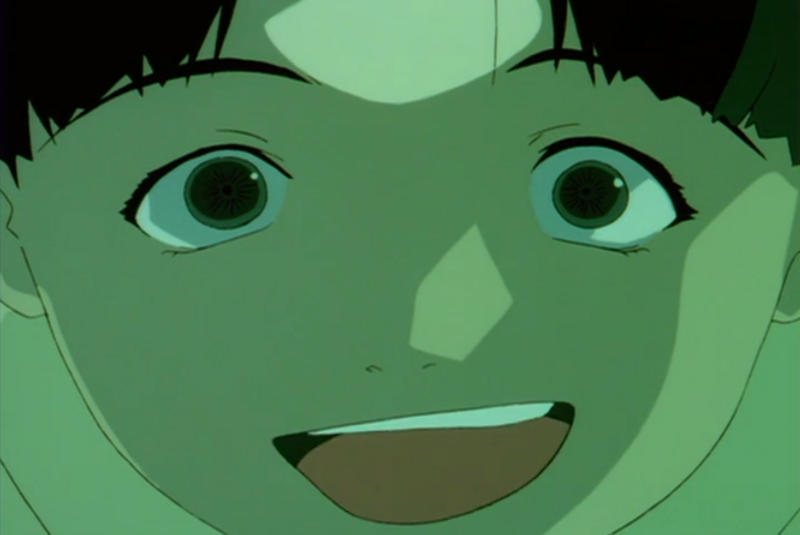
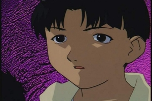

 
Work In Progress's blog
Work In Progress.
GitHub
|
Discord
|
Support me
Posts
2024 June 11 -
Trying to create an example post
2024 July 01 -
My Experience with PSP Development
Projects
C-rypt
- Easy-to-Use Steganography tool entirely written in C.
mousice
- Suckless CLI YouTube-Music Player.
ExaPhisher
- Social Media Phishing Suite written in Python and Php.
Lawliet
- Osint tool to track down social media profiles using a specific username across multiple social network platforms.
OsintTube
- An Easy-to-Use YouTube OSINT Tool.
UMusic
- A feature-rich, lightweight PSP music player.
DiscDoor
- An Easy-to-Use Discord-Based Backdoor Tool.
SocialMediaHackingToolkit
- Social Media Hacking Suite. (archived)